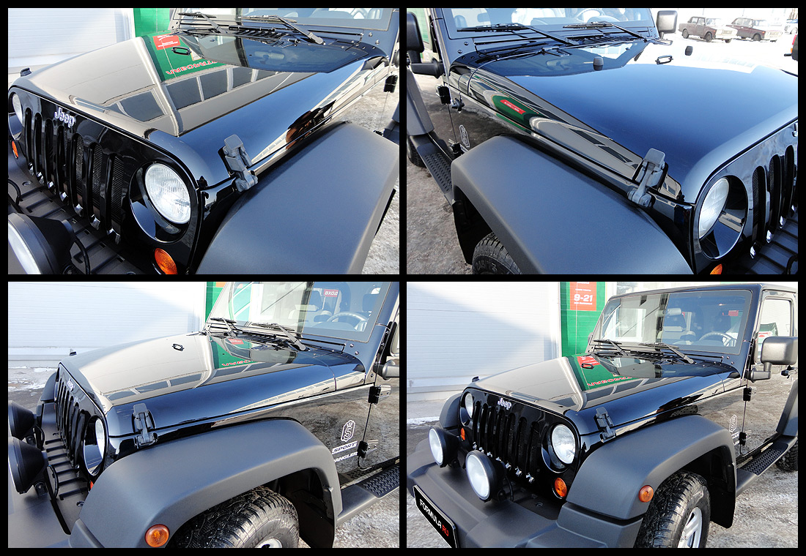
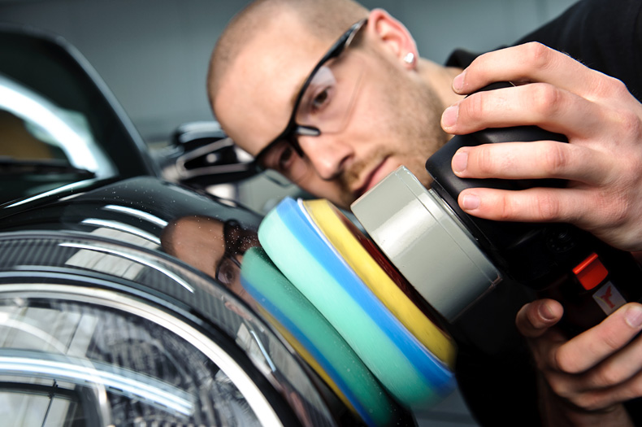
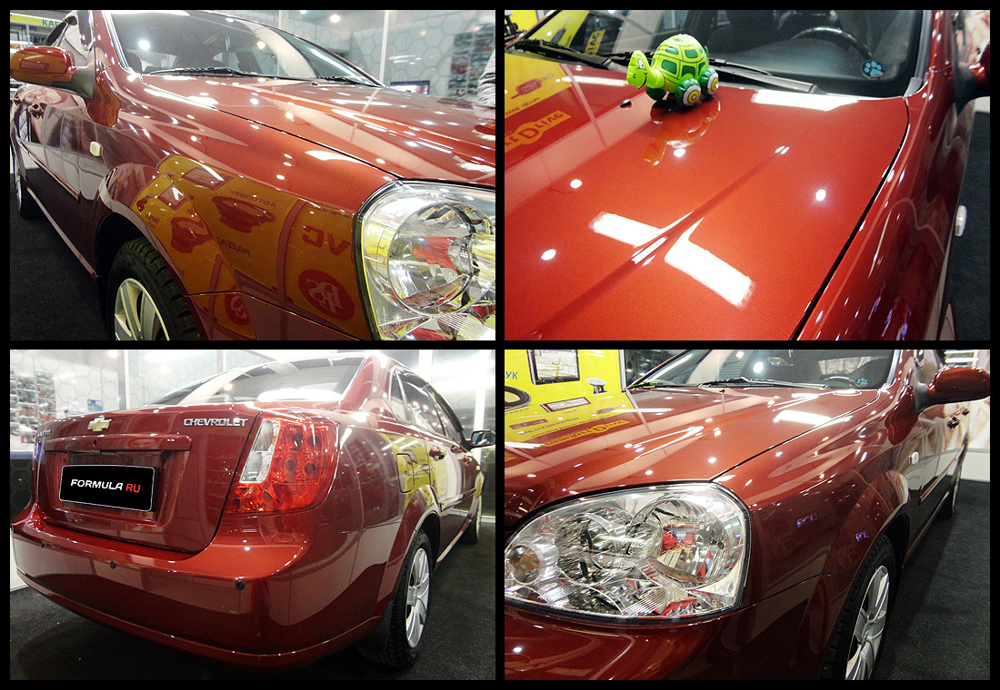

Керамическая полировка автомобиля является одной из самых современных разновидностей полировки, в рамках которой применяется инновационная полироль, изготовленная из поликерамики с помощью нанотехнологий. Такая полироль, как и все другие защитные, поможет уберечь лакокрасочный покров автомобиля от царапин и попадания на металл агрессивных веществ, приводящих к коррозии. Преимущество её в том, что керамическая полировка авто является самой долговечной защитой, способной выносить самые экстремальные условия в течение 2-х лет. По номиналу планируется 5 лет, но это для Европы и Запада, в условиях России гарантируют только 2 года.
Керамическая полировка отличается своей долговечностью и достаточно высокой стоимостью. Начальная цена — 25 тысяч рублей, особо высококачественные услуги стоят и до 45 тысяч. Тем не менее, эта полироль без проблем служит более двух лет, полностью защищая лакокрасочный покров от любых воздействий окружающей среды, обладает хорошей водоотталкиваемостью, а значит, машину придётся реже мыть. Посчитав примерную стоимость регулярной защитной полировки и мойки машины, можно сделать вывод, что такая крупная разовая инвестиция окупится довольно быстро, сэкономив время.
Керамическая полировка — это весьма сложный процесс, требующий полного соответствия нормам нанесения полироли. Встретить керамическую полироль в свободной продаже маловероятно, поэтому нанесение полироли в домашних условиях практически невозможно, лучше обратиться за этим в хороший автосервис. В остальном керамическая полировка кузова похожа на другие виды защитных полировок по методу нанесения.
В первую очередь на эту услугу стоит обратить внимание состоятельным людям, ведь автомобиль, как предмет статуса, обязан всегда быть в идеальном состоянии. Крепость покрытия может защитить и от недоброжелателей, так как поцарапать его очень трудно. Полезна такая полировка будет и гражданам со средним достатком, ведь одна плата раз в два года будет лучше для семейного бюджета, чем постоянные траты. Керамическая полировка защищает от помёта птиц, тогда как другую полироль помёт может прожечь до грунтовки. Керамическая полировка — это настоящая броня, которая не боится мойки жесткими щётками. Единственный незначительный момент это то, что первые две недели нельзя мыть машину шампунем, химическими средствами и желательно даже не протирать.
Наномойка Антидождь Инновационный автошампунь Полировка «Жидкое стекло»